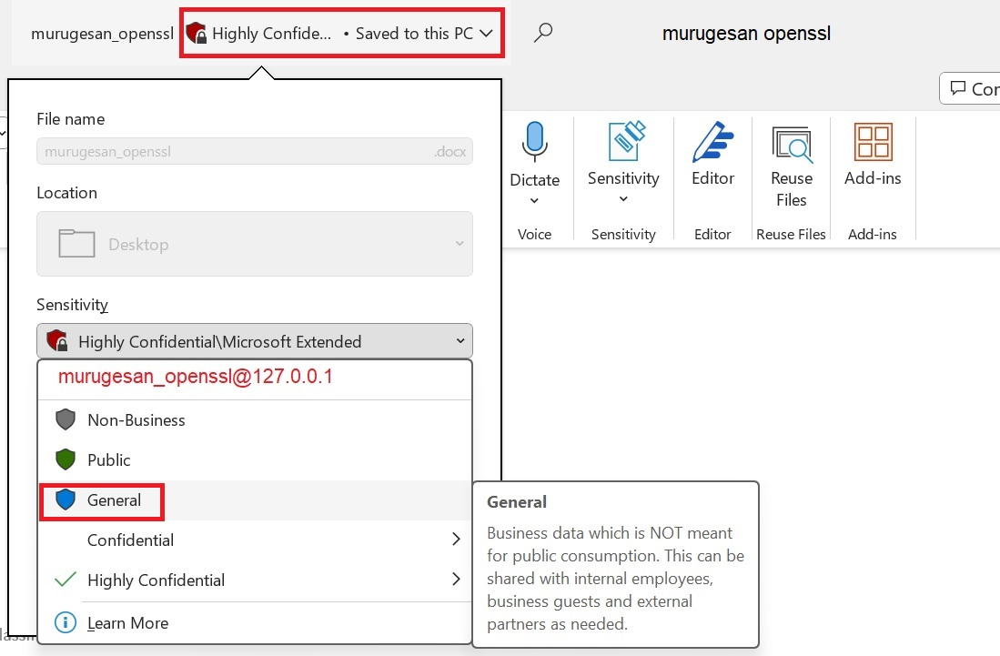
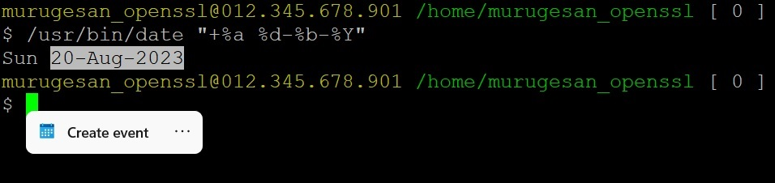
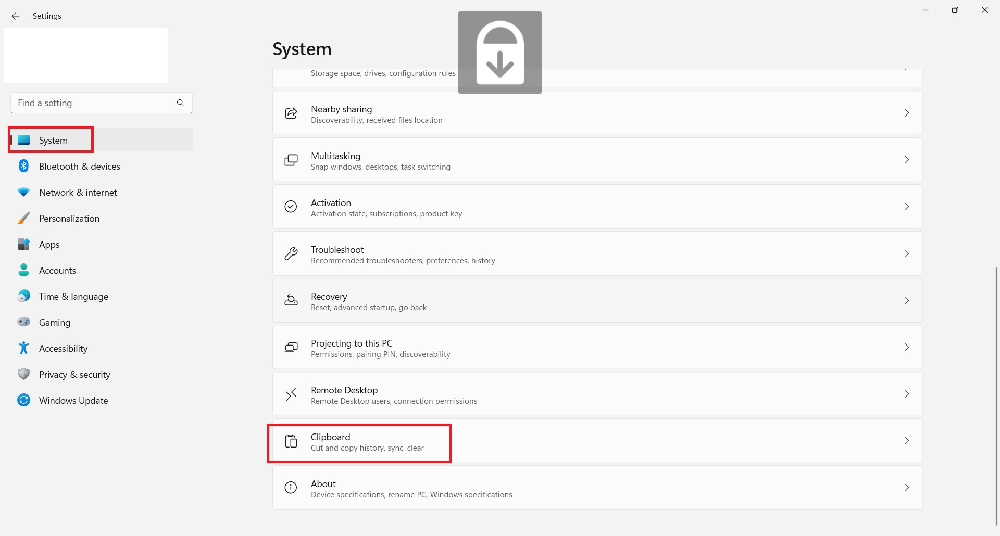
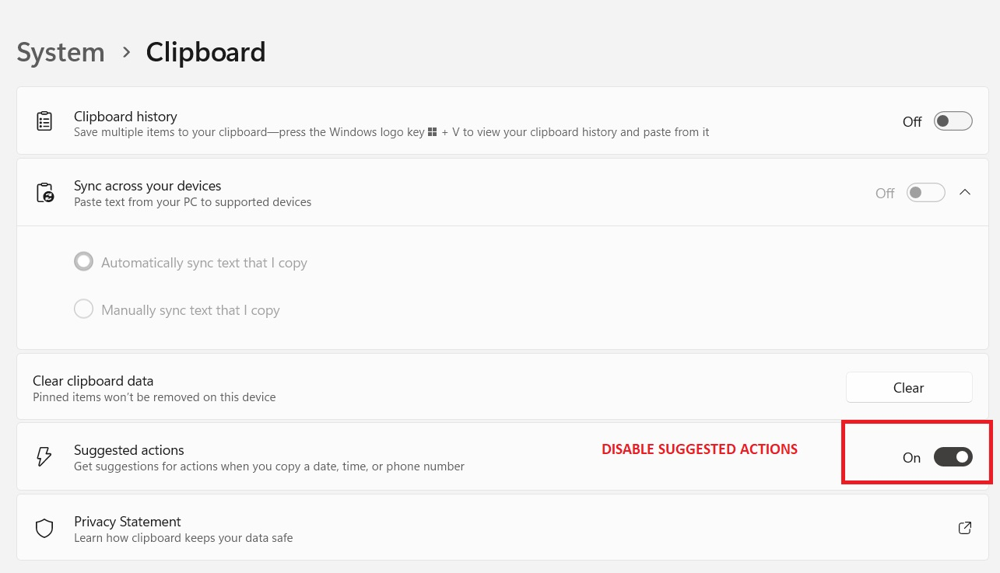
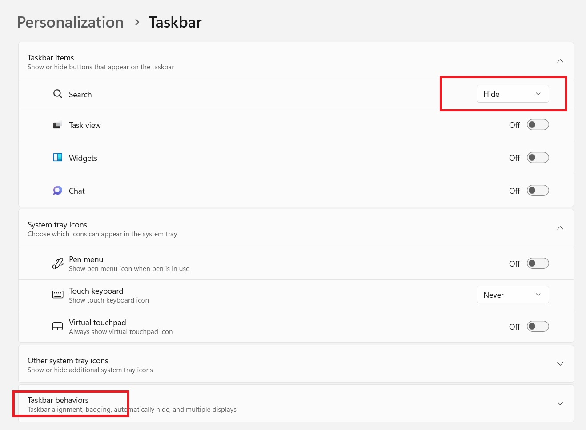
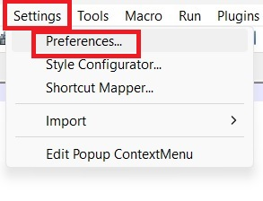
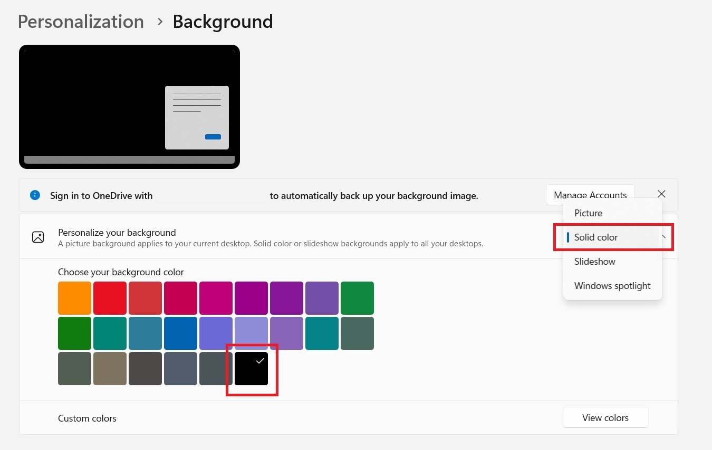
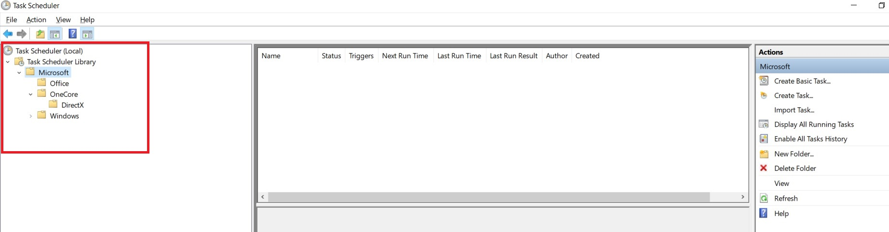
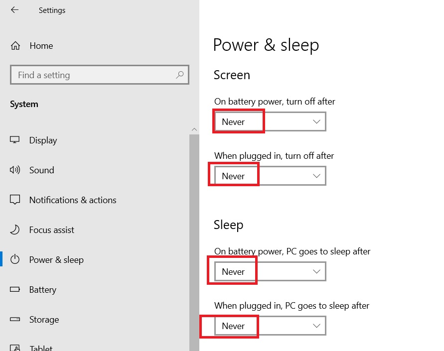
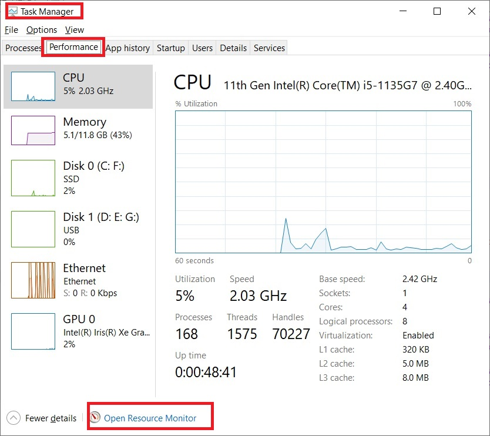

| SET LAPTOP POWER PERCENTAGE ALERT POWER BATTERY ON OR OFF USING WINDOWS BATCH FILE? | CYGWIN C++ program executable? |
| Change windows Time/Date format at Windows 11 Home Single Language | Windows 10 mobile hotspot network settings |
| How to search files at C: drive inside C:\Windows\System32\cmd.exe? | UnlimitedDataUsageAtWindows10InternetSettings? |
without using %USERPROFILE%\Onedrive\Desktop folder
at Windows 10?
| HOW TO SET CURRENT BATTERY POWER PERCENTAGE AND POWER_BATTERY_ON_OR_OFF TO A VARIABLE USING WINDOWS BATCH FILE? | TOP | Bottom | Next |
Replace:
murugesan_openssl
With:
YOUR_USERNAME
| ACTION USING mksh.exe shell script |
CREATE FOLLOWING (TWO) FILES AT YOUR LAPTOP:
01.) C:\CheckLaptopBattery.cmd OR
%USERPROFILE%\CheckLaptopBattery.bat OR
%USERPROFILE%\CheckLaptopBattery.Bat OR
%USERPROFILE%\CheckLaptopBattery.bAt OR
%USERPROFILE%\CheckLaptopBattery.baT OR
%USERPROFILE%\CheckLaptopBattery.BaT OR
C:\CheckLaptopBattery.cmd
02.) C:\CheckLaptopBattery.vbs
CREATE A SHORTCUT OF C:\CheckLaptopBattery.vbs FILE AT FOLLOWING DIRECTORY:
%USERPROFILE%\AppData\Roaming\MICROS~1\Windows\STARTM~1\Programs\Startup
REM CONTENT OF C:\CheckLaptopBattery.cmd
REM UNUSED SYSTEM POWER BATTERY USED TO INCREASE POLLUTION.
IF NOT EXIST C:\RemovePlug.txt ECHO ALERT MESSAGE: REMOVE POWER CABLE AT LAPTOP NOW > C:\RemovePlug.txt
IF NOT EXIST C:\AddPlug.txt ECHO ALERT MESSAGE: ADD POWER CABLE AT LAPTOP NOW > C:\AddPlug.txt
SETLOCAL ENABLEDELAYEDEXPANSION
:START
REM REMOVE USELESS *.DMP coredump FILES AT
REM %USERPROFILE%\AppData\Local\CrashDumps folder
REM TO MAKE %USERPROFILE%\Favorites\Links to be available always at taskbar
REM CD /D %USERPROFILE%\AppData\Local\CrashDumps
REM DEL /Q *.DMP >NUL 2>NUL
REM USE C:\Windows\System32\findstr.exe findstr.exe
REM USE C:\Windows\System32\wbem\WMIC.exe WMIC.exe
FOR /F "skip=1 tokens=1" %%A in ('C:/Windows/System32/wbem/WMIC.exe Path Win32_Battery Get BatteryStatus ^| C:/Windows/System32/findstr.exe /r /v "^$"') DO SET BatteryStatus=%%A
FOR /f "tokens=2 delims==" %%E in ('WMIC.exe path Win32_Battery get EstimatedChargeRemaining /value') do (SET "BA=%%E")
IF %BA% GEQ 98 GOTO MOREPOWER
IF %BA% LEQ 35 GOTO LESSPOWER
TIMEOUT 120 >NUL 2>NUL
GOTO START
:MOREPOWER
IF %BatteryStatus% EQU 2 (
START /B C:\Windows\System32\notepad.exe C:\RemovePlug.txt
) ELSE (
C:\Windows\System32\taskkill.exe /f /im notepad.exe >NUL 2>NUL
)
TIMEOUT 10 >NUL 2>NUL
GOTO START
:LESSPOWER
REM ECHO %BatteryStatus% BatteryStatus
REM Examples (core dump) files I have seen:
REM Notepad.exe.10188.dmp
REM Notepad.exe.11624.dmp
REM Notepad.exe.9492.dmp
REM Notepad.exe.*.dmp
IF %BatteryStatus% EQU 1 (
START /B START /B C:\Windows\System32\notepad.exe C:\AddPlug.txt
) ELSE (
C:\Windows\System32\taskkill.exe /f /im notepad.exe >NUL 2>NUL
)
TIMEOUT 10 >NUL 2>NUL
GOTO START
Dim WinScriptHost
Set WinScriptHost = CreateObject("WScript.Shell")
WinScriptHost.Run Chr(34) & "C:\Users\ murugesan_openssl\CheckLaptopBattery.cmd" & Chr(34), 0
Set WinScriptHost = Nothing
| Change windows Time/Date format |
rundll32.exe shell32.dll,Control_RunDLL intl.cpl
OR
rundll32.exe C:\WINDOWS\System32\shell32.dll,Control_RunDLL C:\WINDOWS\System32\intl.cpl
Click addition settings
Time format: hh:mm tt
Date format: ddd dd-MMM-yyyy
| First Way: Execute following commands inside C:\Windows\System32\cmd.exe
Windows r C:\WINDOWS\system32\rundll32.exe shell32.dll,Control_RunDLL intl.cpl Alt d Ctrl tab tab Short time: hh:mm tt Long time: hh:mm tt Ctrl tab Short date: ddd dd-MMM-yyyy Long date: ddd dd-MMM-yyyy Alt A Esc Esc |
Re direct error(2) to NUL device
NUL is a special device file
which used to discard all data written to it
2 Referring error values
Hence re-direct error values to NUL device.
|
C:\>
CD \ C:\> DIR /S /B *murugesan*openssl* 2>NUL |
Top | Previous | Next |
PROGRA~1 for "Program Files" folder
PROGRA~2 for "Program Files (x86)" folder
| C:\>
DIR /O:D /A /X C:\ | C:\Windows\System32\find.exe "Program Files" Tue 20-May-2003 06:00:AM <DIR> PROGRA~2 Program Files (x86) Wed 21-May-2003 03:00:AM <DIR> PROGRA~1 Program Files C:\> |
| C:\>
C:\Windows\System32\query.exe user USERNAME SESSIONNAME ID STATE IDLE TIME LOGON TIME >murugesan_openssl console 38 Active 1+05:35 Tue 20-May-2003 06:00:AM C:\> |
Top | Previous | Next |
| C:\> C:\> C:\Windows\System32\net.exe user %USERNAME% | C:\Windows\System32\findstr.exe "logon" Last logon Tue 20-May-2003 06:00 AM C:\> |
Top | Previous | Next |
| Short cut at windows to know current Power & battery percentage at laptop? | Top | Previous | Next |
b) batch file and mingw/cygwin commands
=> power.cmd => windows r => power
@ECHO OFF #!/bin/mksh
#Contents of power shell script file.
if [[ "" = "$LOGNAME" ]]
then
LOGNAME=$USERNAME
fi
if [ 0 -eq $# ]
then
echo -ne "\033[H\033[J\033[33m$LOGNAME@127.0.0.1 \033[32m$PWD \033[0m[ $? ]\n$ power\n"
else
echo -ne "\033[H\033[J\033[33m$LOGNAME@127.0.0.1 \033[32m$PWD \033[0m[ $? ]\n$ power $@\n"
fi
/cygdrive/c/Windows/System32/wbem/WMIC.exe Path Win32_Battery Get BatteryStatus 2>&1 |\
/usr/bin/tr -d "\r" 2>>1 |\
/usr/bin/grep "2" >/dev/null 2>&1
Ret=$?
if [ 0 -eq $Ret ]
then
echo "POWER BATTERY PLUGGED IN"
else
echo "POWER BATTERY PLUGGED OUT"
fi
/cygdrive/c/Windows/System32/cmd.exe /c "C:\Windows\System32\wbem\WMIC.exe PATH WIN32_BATTERY GET ESTIMATEDCHARGEREMAINING /VALUE" 2>&1 |\
/usr/bin/tr -d "\r" 2>>1 | /usr/bin/grep -v "^$" | /usr/bin/sed "s/.*=//;" |\
/usr/bin/awk '{
printf( "POWER PERCENTAGE %s%\n", $0);
}'
|
| C:\Windows\System32\wbem\WMIC.exe
PATH Win32_Battery Get EstimatedChargeRemaining /format:value |^ C:\Windows\system32\find.exe "EstimatedChargeRemaining=" |
Top | Previous | Next |
from C:\PROGRA~1\INTERN~1\iexplore.exe
b.. Where proxy server port number saved at Windows operating system?
| a. C:\Windows\System32\inetcpl.cpl b.
|
| C:\Windows\System32\appwiz.cpl | Top | Previous | Next |
control panel
at Windows operating system?
| C:\Windows\System32\control.exe | Top | Previous | Next |
openssl
with:
murugesan openssl
inside WINWORD.EXE ALWAYS?
| Open WINWORD.EXE 01) Press Alt f t p 02) Press Alt a 03)
05) Press OK |
Top | Previous | Next |
|
Full path of winapp executables most probable locations at Windows operating system? |
||||||||||||||||||||||||||||||||||||||||||||
|
Top | Previous | Next |
OR Windows run history saved location?
| C:\Windows\System32\reg.exe query "HKCU\SOFTWARE\Microsoft\Windows\CurrentVersion\Explorer\RunMRU" | Top | Previous | Next |
Classified as Microsoft Highly Confidential
How to remove them?
| Open that document using
WINWORD.EXE At top most above all the available items at menu bar Drill down Highly Confidential Select General  Using this we can remove Classified statement at beginning and end of each page inside that *.docx file at windows. |
Top | Previous | Next |
invalid/special characters
OR Paragraph marks
OR Pilcrows
using WINWORD.EXE
(¶)
Press following keys:
|
Top | Previous | Next |
| Open C:\Windows\regedit.exe Go to following location inside regedit HKEY_CURRENT_USER\SOFTWARE\Microsoft\Command Processor Right click at right pane and create New String Value Variable name: Autorun Value Data: C:\Users\murugesan_openssl \YourFileName.cmd Instead of using murugesan_openssl use your Windows operating system logon user name Instead of using YourFileName.cmd provide some valid name to that .cmd file. Contents of C:\Users\murugesan_openssl \YourFileName.cmd
|
Top | Previous | Next |
Open putty.exe at Windows 11 Home Single Language
After login execute following command:
/usr/bin/date "+%d-%b-%Y"
Double click that dd-mmm-yyyy date
Create event appers/not appearing?

| 01. PRess Windows i OR Press Start menu => Click Settings. 
02. Click System => Clipboard  03. At Suggested actions => Enable/Disable that suggested actions to handle action at create/remove events at putty.exe  |
Top | Previous | Next |
| Create following batch
file CleanAdvertisement.cmd Open command prompt as administrator and execute the same CleanAdvertisement.cmd batch file. |
Top | Previous | Next |
@ECHO OFF
GOTO START_MENU_EXCEPTION_01
:START_MENU_EXCEPTION_01
SET AMAZON_URL_FILE=C:\PROGRA~3\MICROS~1\Windows\STARTM~1\Programs\Amazon.url
IF NOT EXIST %AMAZON_URL_FILE% ECHO Amazon.url EXCEPTION NOT FOUND AT WINDOWS START MENU
IF NOT EXIST %AMAZON_URL_FILE% GOTO START_MENU_EXCEPTION_02
IF EXIST %AMAZON_URL_FILE% ECHO GOING TO DELETE ADVERTISEMENT FILE USING INTERACTIVE MODE DEL /P %AMAZON_URL_FILE%
IF EXIST %AMAZON_URL_FILE% DEL /P %AMAZON_URL_FILE%
GOTO START_MENU_EXCEPTION_02
:START_MENU_EXCEPTION_02
SET AGODA_URL_FILE=C:\PROGRA~3\MICROS~1\Windows\STARTM~1\Programs\Agoda.url
IF NOT EXIST %AGODA_URL_FILE% ECHO Agoda.url EXCEPTION NOT FOUND AT WINDOWS START MENU
IF NOT EXIST %AGODA_URL_FILE% GOTO START_MENU_EXCEPTION_03
IF EXIST %AGODA_URL_FILE% ECHO GOING TO DELETE ADVERTISEMENT FILE USING INTERACTIVE MODE DEL /P %AGODA_URL_FILE%
IF EXIST %AGODA_URL_FILE% DEL /P %AGODA_URL_FILE%
GOTO START_MENU_EXCEPTION_03
:START_MENU_EXCEPTION_03
SET PLANET_URL_FILE=C:\PROGRA~3\MICROS~1\Windows\STARTM~1\Programs\PLANET~1.URL
IF NOT EXIST %PLANET_URL_FILE% ECHO PLANET~1.URL EXCEPTION NOT FOUND AT WINDOWS START MENU
IF NOT EXIST %PLANET_URL_FILE% GOTO END
IF EXIST %PLANET_URL_FILE% ECHO GOING TO DELETE ADVERTISEMENT FILE USING INTERACTIVE MODE DEL /P %PLANET_URL_FILE%
IF EXIST %PLANET_URL_FILE% DEL /P %PLANET_URL_FILE%
GOTO END
:END
| Open C:\Windows\regedit.exe Navigate to following Key inside regedit HKEY_CURRENT_USER\Software\Microsoft\Windows\CurrentVersion\Explorer\Advanced OR HKCU\Software\Microsoft\Windows\CurrentVersion\Explorer\Advanced Start_ShowClassicMode DWORD(32 bit) Value This DWORD need to have following value: 1 Re-start the system One more way to verify the same using C:\Windows\System32\cmd.exe: C:\Windows\system32\reg.exe query "HKCU\Software\Microsoft\Windows\CurrentVersion\Explorer\Advanced" | C:\Windows\System32\find.exe "Start_ShowClassicMode" OUTPUT: Start_ShowClassicMode REG_DWORD 0x1 |
Top | Previous | Next |
| Press Windows I => Click
Personalization => Click Start => Disable following options: a. Show recently added apps b. Show most used apps c. Show recently opened items in start, Jump Lists, and File Explorer d. Show recommendations for tips, shortcuts, new apps, and more |
Top | Previous | Next |
snapshot or snippingtool OR
snippingtool.exe not working at
Windows 11 Home Single Language
| Create a batch file using following content | Top | Previous | Next |
@ECHO OFF
START /B C:\PROGRA~1\WindowsApps\Microsoft.ScreenSketch_11.2209.2.0_x64__8wekyb3d8bbwe\ScreenSketch.exe
REM PROVIDED THAT YOU ARE HAVING
REM C:\PROGRA~1\WindowsApps\Microsoft.ScreenSketch_11.2209.2.0_x64__8wekyb3d8bbwe\ScreenSketch.exe
REM you can search that using following commands inside C:\Windows\System32\cmd.exe
REM C:> CD /D C:\PROGRA~1\WindowsApps\
REM C:> DIR/S /B ScreenSketch.exe
Save this file as snippingtool.cmd
Add that directory at PATH environment variable.
After this we can use snippingtool using following command at:
Windows r
snippingtool
|
At Windows 11 Enterprise or Windows 11 Home
Single Language operating systems
: How to 01. Disable ENG from task bar 02. Disable search bar 03. KEEP START MENU AT LEFT SIDE. 04. HOW TO AUTOHIDE TASKBAR? 05. Enable the clock to display seconds. |
Top | Previous | Next |
Press Windows I
Search:
Language settings
Click:
Language settings
Preferred languages need to have:
English(United States)

01.b) Open cmd.exe as administrator
Open powershell.exe
Execute following commands inside powershell (including dollar symbol):
|
$LangList = Get-WinUserLanguageList $MarkedLang = $LangList | where LanguageTag -eq " $LangList.Remove($MarkedLang) Set-WinUserLanguageList $LangList -Force |
|
If above step not working proceed with other steps mentioned below: Logout => Windows r => C:\Windows\System32\shutdown.exe /l Re-login powershell source code taken from: https://answers.microsoft.com/en-us/windows/forum/all/removing-a-language-option-from-keyboard/cefbc8eb-c1f8-448d-a7a0-652d2304918e ON Sun 11-Feb-2024 IST If above step not working: Connect your system to internet. Press Start menu Click Settings At left pane, click Time & language At right pane click Language & region At right pane under Preferred languages Click Add a language Search the language that you have installed earlier: I have installed: English (India) Hence I searched: English (India) Click Next Click Install At right pane drill down ... after English (India) Click remove Press Yes Execute above powershell script again using administrator. Restart and login again. |
Steps to disable ENG from taskbar at Windows operating system.
Execute following batch file using cmd.exe (administrator):
@ECHO OFFLOGOFF AND RELOGIN
C:\Windows\System32\reg.exe query "HKCU\Software\Microsoft\CTF\LangBar" | C:\Windows\System32\find.exe "ShowStatus" | C:\Windows\System32\find.exe "0x4"
IF %ERRORLEVEL% EQU 0 (
ECHO "LangBar => ShowStatus 0x4 exists"
) ELSE (
ECHO "Adding LangBar => ShowStatus to 0x4"
ECHO C:\Windows\System32\reg.exe add "HKCU\Software\Microsoft\CTF\LangBar" /f /v ShowStatus /t REG_DWORD /d 4
ECHO Yes | C:\Windows\System32\reg.exe add "HKCU\Software\Microsoft\CTF\LangBar" /f /v ShowStatus /t REG_DWORD /d 4
)
C:\Windows\System32\reg.exe query "HKCU\Software\Microsoft\CTF\LangBar"
| regedit.exe query using ShowStatus | String Name | String Type | String Value | AFTER LOGOUT AND RELOGIN ENG AVAILABILITY |
ON |
| C:\Windows\System32\reg.exe query "HKCU\Software\Microsoft\CTF\LangBar" | ShowStatus | REG_DWORD | 0x3 | Yes | Fri 25-Aug-2023 11:28 AM IST |
| C:\Windows\System32\reg.exe query "HKCU\Software\Microsoft\CTF\LangBar" | ShowStatus | REG_DWORD | 0x4 | No | Fri 25-Aug-2023 11:28 AM IST |
01.d Initially disable ENG from taskbar
Steps to disable ENG taskbar:
Start menu => Advanced keyboard settings => Enable the option for => Use the desktop language bar when it's available.
If this is not helping after restarting windows OS
Start menu => Settings => Time & Language => Language & region => Preferred languages => This need to have only one language to disable ENG at taskbar.
02. Right click at task bar => Click Properties => Disable/Enable Show search option

03. KEEP START MENU AT LEFT SIDE.
Click Start menu => Search => Settings
Click Settings

Click Personalization => Taskbar

At Task bar items => Click Hide for Search option (I always used to hide search option)
Click Taskbar behaviours

a. Select Left at Taskbar alignment
b. Disable Automatically hide taskbar
b. Select Show seconds in system tray clock(uses more power)

Windows operating system?
|
for a particular or current user
at Windows operating system.
We can use following command
at command prompt:
|
Top | Previous | Next |
when using JIO/BSNL/AIRTEL PREPAID AND POSTPAID NETWORKS
| AFTER TAKING BACKUP, I THOUGHT OF TRAVELLING TO THE SHOP AT BANGALORE WHERE I BOUGHT MY LAPTOP TO REINSTALL WINDOWS AT MY LAPTOP. THIS ERROR HAPPENED AFTER MY WINDOWS UPDATE USING BSNL NETWORK. AFTER THIS I HAVE RECEIVED FOLLOWING RESPONSE:
PRESS START MENU OPEN SETTINGS CLICK NETWORK & INTERNET CLICK PROXY AT RIGHT PANE CLICK EDIT/SET UP AVAILABLE UNDER MANUAL PROXY SETUP => AT RIGHT PANE BEFORE PERFORMING FOLLOWING ACTION TAKE A SNAPSHOT OF CURRENT SETTINGS AT PROXY SERVER ON ANY OPERATING SYSTEM ENABLE/DISABLE PROXY SERVER AFTER DISABLING PROXY SERVER MY NETWORK STARTED WORKING. |
Top | Previous | Next |
AUTOMATED UPDATION ERROR
FROM notepad++.EXE ONCE WHEN CONNECTED TO NETWORK
Open notepad++.exe Click Settings => Preferences => SHORT CUT Alt t p m m m  Disable the option to "Enable notepad++ auto-updater"  Also disable auto completing using:
Settings => Preferences => Select Auto-completion
Also disable auto completing using:
Settings => Preferences => Select Auto-completionDisable the option for Enable auto-completion on each input 
Open cmd.exe (Administrator) and execute following commands inside that command prompt.
|
Where to download the driver for following wireless nano wireless USB Adaptor
TP-Link Archer T600U Nano Driver
Purpoes of usb adaptor:
Wireless N Nano USB Adapter (DWA-131) used to connect the computer/laptop/notebook_computer to a wireless network
It is used to access a high-speed Internet connection, transfer files, and stream media from greater distances at home or IT PARK(office).
| Open following URL https://www.tp-link.com/no/support/download/archer-t600u-nano Download I have downloaded above zip file on Mon 11-Sep-2023 IST Above XP related zip file(Setup.exe) was successfully installed at Windows 11 Home Single Language. |
Top | Previous | Next |
| Windows r => C:\Windows\System32\control.exe
=> View by Category => Under Hardware and Sound click View devices and
printers =>At right pane click Printers & scanners => Click your Default printer. I am having HP DeskJet 3630 series => Scroll down click More devices and printers settings => Double click HP DeskJet 3640 series => Double click See What's Printing. Open C:\Windows\System32\cmd.exe C:> C:\Windows\System32\tasklist.exe > delete_1.txt C:> REM Close HP DeskJet 3640 series C:> C:\Windows\System32\tasklist.exe > delete_2.txt C:> dos2unix.exe delete_2.txt delete_1.txt C:> sed.exe -i "s/ [0-9]*,[0-9].* K//;" delete_2.txt delete_1.txt C:> diff.exe delete.txt delete1.txt | grep.exe -E -v "sleep.exe|bash.exe|conhost.exe|tasklist.exe" 169d168 < rundll32.exe 10176 Console 1 185,188c184,187 --- Open HP DeskJet 3640 series Open procexp.exe search rundll32.exe I am having following process: C:\Windows\System32\rundll32.exe fdprint,InvokeTask /oq "{9009EE99-5ED8-5B4E-9FC6-2ED5D5E2F210}" Open %USERPROFILE%\Favorites\Links Create a short cut for the following command: C:\Windows\System32\rundll32.exe fdprint,InvokeTask /oq "{9009EE99-5ED8-5B4E-9FC6-2ED5D5E2F210}" Like the same I have created same short cut for scanner: "C:\PROGRA~1\WindowsApps\Microsoft.WindowsScan_6.3.9654.17133_x64__8wekyb3d8bbwe\scanapp.exe" -ServerName:App.AppXaxamg5eesqyjpqktbt1zkpbb33rtkxjx.mca |
Top | Previous | Next |
Windows could not start the Microsoft Dynamics 365 for Operations - Batch Management Service service on Local Computer. Error 1064:An Exception occurred in the service when handling the control request.
| 01) Execute following SQL STATEMENT at Windows: UPDATE SQLSYSTEMVARIABLES SET VALUE = 0 WHERE PARM = 'CONFIGURATIONMODE'; 02) Restart IIS web server (Administrator privileges) C:\Windows\SysWOW64\iisreset.exe |
Top | Previous | Next |
| Create a short cut to following
file at Desktop: C:\Windows\System32\mblctr.exe |
Top | Previous | Next |
| Create a short cut to following
file at Desktop: %windir%\system32\compmgmt.msc /s |
Top | Previous | Next |
| C:\Windows\System32\NETSTAT.EXE -nato | C:\Windows\System32\find.exe "LISTEN" | Top | Previous | Next |
C:\> c:\Windows\System32\NETSTAT.EXE -nato | c:\Windows\System32\findstr.exe "9017 Address" |
Top | Previous | Next |
|
01) On Thu 14-Sep-2023 I have opened following url using firefox.exe: 02) Download ep_setup.exe 03) Execute ep_setup.exe using administrator 04) After installation open following directory: %USERPROFILE%\AppData\Roaming\vlc\crashdump This directory needs to be empty. Initially I tried following action: If any *.DMP files present, delete them always using automation at windows. However after windows update on 15-Oct-2023 IST The problem occured again. Windows git-hub provided following felp(using Administrator shared desktop which has not resolved that issue): 1) C:\Windows\System32\sfc.exe /scannow 2) C:\Windows\System32\Dism.exe /Online /Cleanup-Image /RestoreHealth 3) %HOME%\Windows_Backup\ep_setup.exe 4) %Downloads%\ep_setup.exe latest binary from https://github.com/valinet/ExplorerPatcher/releases/download/22621.2361.58.4_b52bd79/ep_setup.exe Hence I commented automated deletion of *.dmp files at %USERPROFILE%\AppData\Local\CrashDumps After this I found core dump files from: 1) explorer.exe 2) SearchHost.exe 3) HxTsr.exe and shutdown my system. After 10 minutes when I login again after startup Links started working again. Using these steps I enabled %USERPROFILE%\Favorites\Links at following operating system: Windows 11 Home Single Language After this I have updated automated using the following: a) rm explorer.exe*.dmp b) rm SearchHost.exe*.dmp c) rm HxTsr.exe*.dmp d) Execute %USERPROFILE%\Downloads\ep_setup.exe using administrator e) Copy C:\PROGRA~1\EXPLOR~1\ep_setup.exe C:\PROGRA~1\EXPLOR~1\ep_setup_backup_001.exe f) Execute C:\PROGRA~1\EXPLOR~1\ep_setup.exe If following error happens: A dialogue box displaying:
DisplayFavoritesLink.cmd |
Top | Previous | Next |
@ECHO OFF
IF NOT EXIST %USERPROFILE%\Downloads\ep_setup.exe ECHO DOWNLOAD ep_setup.exe from
IF NOT EXIST %USERPROFILE%\Downloads\ep_setup.exe ECHO https://github.com/valinet/ExplorerPatcher/releases/download/22621.2361.58.4_b52bd79/ep_setup.exe
IF NOT EXIST %USERPROFILE%\Downloads\ep_setup.exe ECHO I HAVE DOWNLOADED FROM USING ABOVE URL ON 16-Oct-2023 IST
IF NOT EXIST %USERPROFILE%\Downloads\ep_setup.exe ECHO GOTO EOF_01
IF NOT EXIST %USERPROFILE%\Downloads\ep_setup.exe GOTO EOF
C:\Windows\System32\whoami /groups |^
C:\Windows\System32\findstr.exe /B BUILTIN\Administrators |^
C:\Windows\System32\findstr.exe /C:"Enabled group" >NUL && GOTO :EXECUTE_USING_ADMIN_PRIVILEGE
ECHO ERRORLEVEL %ERRORLEVEL%
ECHO EXECUTE %0 using ADMINISTRATOR PRIVILEGES.
ECHO GOTO EOF_02
GOTO EOF
:EXECUTE_USING_ADMIN_PRIVILEGE
REM IF NOT EXIST C:\PROGRA~1\EXPLOR~1\ep_setup.exe ECHO COPY C:\PROGRA~1\EXPLOR~1\ep_setup_backup_001.exe C:\PROGRA~1\EXPLOR~1\ep_setup.exe
IF NOT EXIST C:\PROGRA~1\EXPLOR~1\ep_setup.exe IF EXIST %USERPROFILE%\Downloads\ep_setup.exe ECHO START /B %USERPROFILE%\Downloads\ep_setup.exe
IF NOT EXIST C:\PROGRA~1\EXPLOR~1\ep_setup.exe IF EXIST %USERPROFILE%\Downloads\ep_setup.exe START /B %USERPROFILE%\Downloads\ep_setup.exe
IF NOT EXIST C:\PROGRA~1\EXPLOR~1\ep_setup.exe ECHO COPY C:\PROGRA~1\EXPLOR~1\ep_setup_backup_001.exe C:\PROGRA~1\EXPLOR~1\ep_setup.exe >NUL 2>NUL
IF NOT EXIST C:\PROGRA~1\EXPLOR~1\ep_setup.exe COPY C:\PROGRA~1\EXPLOR~1\ep_setup_backup_001.exe C:\PROGRA~1\EXPLOR~1\ep_setup.exe >NUL 2>NUL
c:\WINDOWS\system32\taskkill.exe /f /im explorer.exe >NUL 2>NUL
c:\WINDOWS\system32\taskkill.exe /f /im SearchHost.exe >NUL 2>NUL
c:\WINDOWS\system32\taskkill.exe /f /im HxTsr.exe >NUL 2>NUL
REM IF EXIST C:\PROGRA~1\EXPLOR~1\ep_setup.exe ECHO C:\PROGRA~1\EXPLOR~1\ep_setup.exe
IF EXIST ECHO C:\PROGRA~1\EXPLOR~1\ep_setup.exe C:\PROGRA~1\EXPLOR~1\ep_setup.exe
IF EXIST C:\PROGRA~1\EXPLOR~1\ep_setup.exe C:\PROGRA~1\EXPLOR~1\ep_setup.exe
ECHO GOTO EOF_03
GOTO EOF
:EOF
Open cmd.exe and execute
following icacls.exe command:
|
Top | Previous | Next |
Clicking "Manage Bookmarks" do not help to remove that alert message.
How to remove this "Manage Bookmarks" alert from firefox.exe?
| Open following url using
firefox.exe about:profiles Click create New Profile Press Next Click Choose Folder I have selected following folder: %USERPROFILE%\AppData\Roaming\Mozilla\Firefox\Profiles\MozillaProfile Replace: Default User With: Default_User Click Next Close and reopen firefox.exe |
Top | Previous | Next |
| Open firefox.exe Open about:config Search: app.update.auto Change from boolean to to false. Close firefox.exe Re-open firefox.exe Close and reopen firefox after creating the following file: %USERPROFILE%\AppData\Local\MozillaFirefox\distribution\policies.json {
Stop and disable the following firefox service: MozillaMaintenance gzip the following executables: C:\PROGRA~1\Notepadplusplus\uninstall.exe.gz C:\PROGRA~1\Notepadplusplus\updater\GUP.exe.gz C:\PROGRA~1\TextPad7\PortableWizard.exe.gz C:\PROGRA~1\TextPad7\regid.2015-05.exe.textpad_83F5EF12-C2F9-4C11-A5C5-57A7B2D7AD25.swidtag.gz C:\PROGRA~1\TextPad7\system\Ddeopn32.exe.gz C:\PROGRA~1\TextPad7\system\Plumb.exe.gz C:\PROGRA~1\TextPad7\system\URIFileOpen.exe.gz C:\PROGRA~1\Mozilla Firefox\crashhelper.exe.gz C:\PROGRA~1\Mozilla Firefox\crashreporter.exe.gz C:\PROGRA~1\Mozilla Firefox\default-browser-agent.exe.gz C:\PROGRA~1\Mozilla Firefox\firefox.exe.sig.gz C:\PROGRA~1\Mozilla Firefox\maintenanceservice.exe.gz C:\PROGRA~1\Mozilla Firefox\maintenanceservice_installer.exe.gz C:\PROGRA~1\Mozilla Firefox\nmhproxy.exe.gz C:\PROGRA~1\Mozilla Firefox\pingsender.exe.gz C:\PROGRA~1\Mozilla Firefox\plugin-container.exe.gz C:\PROGRA~1\Mozilla Firefox\plugin-container.exe.sig.gz C:\PROGRA~1\Mozilla Firefox\private_browsing.exe.gz C:\PROGRA~1\Mozilla Firefox\updater.exe.gz C:\PROGRA~1\Mozilla Firefox\uninstall\helper.exe.gz %USERPROFILE%\AppData\Local\MozillaFirefox\crashreporter.exe.gz %USERPROFILE%\AppData\Local\MozillaFirefox\default-browser-agent.exe.gz %USERPROFILE%\AppData\Local\MozillaFirefox\firefox.exe.sig.gz %USERPROFILE%\AppData\Local\MozillaFirefox\maintenanceservice.exe.gz %USERPROFILE%\AppData\Local\MozillaFirefox\maintenanceservice_installer.exe.gz %USERPROFILE%\AppData\Local\MozillaFirefox\minidump-analyzer.exe.gz %USERPROFILE%\AppData\Local\MozillaFirefox\pingsender.exe.gz %USERPROFILE%\AppData\Local\MozillaFirefox\plugin-container.exe.gz %USERPROFILE%\AppData\Local\MozillaFirefox\private_browsing.exe.gz %USERPROFILE%\AppData\Local\MozillaFirefox\uninstall\helper.exe.gz %USERPROFILE%\AppData\Local\MozillaFirefox\updater.exe.gz Remove following file and directory: rm.exe -f "C:\PROGRA~1\WindowsApps\Mozilla.Firefox_138.0.4.0_x64__n80bbvh6b1yt2\VFS\ProgramFiles\Firefox Package Root\private_browsing.exe" rm.exe -rf "C:\PROGRA~1\WindowsApps\Mozilla.Firefox_138.0.4.0_x64__n80bbvh6b1yt2" rm.exe "/cygdrive/c/Users/$LOGNAME/AppData/Roaming/Microsoft/Windows/Start Menu/Programs/Firefox Private Browsing.lnk" rm.exe "/cygdrive/c/ProgramData/Microsoft/Windows/STARTM~1/Programs/Firefox Private Browsing.lnk" rm.exe "/cygdrive/c/PROGRA~3/Microsoft/Windows/STARTM~1/Programs/Firefox.lnk" rm.exe "/cygdrive/c/Users/$LOGNAME/AppData/Roaming/Microsoft/Windows/Start Menu/Programs/Firefox.lnk" rm.exe "/cygdrive/c/ProgramData/Microsoft/Windows/Start Menu/Programs/Firefox.lnk" rm.exe "/cygdrive/c/Users/ALLUSE~1/Microsoft/Windows/Start Menu/Programs/Firefox.lnk" rm.exe "/cygdrive/c/Users/$LOGNAME/AppData/Roaming/Microsoft/Internet Explorer/Quick Launch/User Pinned/TaskBar/Firefox.lnk" rm.exe "/cygdrive/c/Users/$LOGNAME/AppData/Roaming/Microsoft/Windows/Start Menu/Programs/Firefox.lnk" |
Top | Previous | Next |
| Open WINWORD.EXE Type first line having 2 letters Press Enter Type few hiphen characters ---- Press Enter A horizontal line used to be inserted. Keep the cursor above that horizontal line. Click Home from menu bar Drill down borders which is available approximately at central bottom line of menu bar Click No border. |
Top | Previous | Next |
when using any one of the following microsoft office applications.
WINWORD.EXE
POWERPNT.EXE
EXCEL.EXE
| Registry key for Word: HKEY_CURRENT_USER\Software\Microsoft\Office\16.0\Word DELETE FOLLOWING DWORD TO DISABLE AutoSaveByDefaultUserChoice For Excel or PowerPoint it is: HKEY_CURRENT_USER\Software\Microsoft\Office\16.0\Excel HKEY_CURRENT_USER\Software\Microsoft\Office\16.0\PowerPoint LOCATION OF THOSE EXECUTABLES: C:\PROGRA~2\MICROS~2\root\Office16\WINWORD.EXE C:\PROGRA~2\MICROS~2\root\Office16\POWERPNT.EXE C:\PROGRA~2\MICROS~2\root\Office16\EXCEL.EXE |
Top | Previous | Next |
| We need to create the short
cut or a new batch file at following location: %USERPROFILE%\AppData\Roaming\Microsoft\Windows\STARTM~1\Programs\Startup We can use batch file or command file or visual basic files or any executables. |
Top | Previous | Next |
| Before opening C:\Windows\System32\cmd.exe Create a sample batch file Content of C:\Users\murugesan_openssl \murugesanopenssl.cmd
Go to HKEY_CURRENT_USER\SOFTWARE\Microsoft\Command Processor Create a new String Value Name:Autorun Value: C:\Users\murugesan_openssl \murugesanopenssl.cmd Instead of using murugesan_openssl use your user name. We can use fullpath\anyname.cmd OR fullpath\anyname.vbs or fullpath\anyname.bat files. We can check the same using following command inside C:\Windows\System32\cmd.exe: C:\Windows\System32\reg.exe query "HKCU\SOFTWARE\Microsoft\Command Processor" |
Top | Previous | Next |
| https://myaccount.microsoft.com | Top | Previous | Next |
| C:\Windows\System32\rundll32.exe
shell32.dll,Control_RunDLL appwiz.cpl OR C:\Windows\System32\appwiz.cpl |
Top | Previous | Next |
Sample program using mksh.exe/bash.exe
at Windows operating system:#!/bin/mksh |
Top | Previous | Next |
On first day I have downloaded 2.5 GB How to download remaining GB on next day?
| Initially I have logged
on to my authorized site using my username and password After logon, I tried downloading that 4GB zip file using firefox.exe. Once reaching 2.4GB of size, Right click on downloaded file and clicked pause. I have taken the back of following downloaded file: MOVE WINDOWS.X64_213000_db_home.zip.part WINDOWS.X64_213000_db_home.zip.part.BACKUP01 Next day I logged on to my authorized site After login I tried downloading the same file again once the download started, right click on downloaded file(about:downloads page) Click pause NOW COPY YESTERDAY'S (DOWNLOADED) FILE TO CURRENT FILE. COPY WINDOWS.X64_213000_db_home.zip.part.BACKUP01 WINDOWS.X64_213000_db_home.zip.part AFTER THIS RIGHT CLICK AT firefox.exe click continue Next day I have downloaded all 4GB File successfully. |
Top | Previous | Next |
FirstEmail at dnsdomain dot com
SecondEmail at dnsdomain dot com
After this I made following changes:
a. File => Account Settings => Account Settings => Email => FirstEmail at dnsdomain dot com => Set as Default
b. File => Account Settings => Account Settings => Data File => SecondEmail at dnsdomain dot com => Set as Default => Tick mark enabled for FirstEmail at dnsdomain dot com
When I press Ctrl N to open a new email, it is always selecting SecondEmail at dnsdomain dot com as sender instead of selecting default email SecondEmail at dnsdomain dot com
| Press: Alt f t => Select Advanced OR Click File => Options => Advanced => Start Microsoft outlook 365 in this folder: => Click browse => drill down Search folders. Search folders needs to be Search folders of RequiredEmail at dnsdomain dot com instead of using other account OtherEmail at dnsdomain dot com => Select Unread Email => Press OK => Press OK Assume that you are unable to find Unread Email at Search folders Drill down SecondEmail at dnsdomain dot com => Click Search Folders => Right click on Search Folders => Click New New Search Folder => Select Unread Email => Press Ok Close Microsoft outlook 365 Open Microsoft outlook 365 |
Top | Previous | Next |
|
Top | Previous | Next |
|
Top | Previous | Next |
| Press: Alt f s At left pane bottom Click Reset settings |
Top | Previous | Next |
REASONS:
01. ALERT MESSAGE CHECKING POWER BATTERY FOR PLUGIN/PLUGOUT AT LAPTOP
02. OPEN REQUIRED BROWSER TO SUBMIT TIMESHEET FOR EACH WEEK.
| CREATE A BATCH FILE (.cmd
or .bat FILE) AT ANY DIRECTORY. Example: I created a batch file at C:\murugesan_openssl .cmd Open following folder %USERPROFILE%\AppData\Roaming\Microsoft\Windows\Start Menu\Programs\Startup Create a short cut here for that batch file C:\ murugesan_openssl.cmd |
Top | Previous | Next |
Right click at desktop => Undo rename appears
How to remove Undo rename option using right click menu bar at Windows operating system?
Open cmd.exe
Click undo rename => click Cancel |
Top | Previous | Next |
2) Open %USERPROFILE% directory
3) Drag "New Folder" from desktop to %USERPROFILE% folder manually.
4) Right click at desktop => Undo move appears
How to remove Undo move option using right click menu bar at Windows operating system?
Open cmd.exe
Click undo move => click Cancel |
Top | Previous | Next |
|
Top | Previous | Next |

| C:> C:\PROGRA~2^ \MICROS~2^ \root\Office16\OUTLOOK.EXE |
Assume that following text is available inside the contents of that email:
murugesan openssl
Press Ctrl f and find murugesan openssl
Search is reporting the following error when searching:
Microsoft Outlook => No results found. => Ok
When
searching disable "No Formatting" button to get expected result on searching
required string at email. 
|
Top | Previous | Next |
a) How to change desktop background image to black image?
b) How to change lock screen/login background image to black image?
| a)How to change desktop
background image to black image? Press Start menu Type following word: background Click: Choose your desktop background Select solid color and select black color.  b) How to change lock screen/login background image to black image? Press Start menu Type following word: background c) At Windows 10 Pro Press Windows i Search lock Click Lock screen settings. Clck picture at right pane Click browse and use black image.jpg At Windows 11 Click: Change your lock screen background
|
Top | Previous | Next |
always at maximized window?
| a) Assume that the current user name is murugesan_openssl Press windows r Press ok after type following command:
We can also perform the same inside any batch file(maximum_putty.cmd) and windows r maximum_putty.cmd Include that directory of maximum_putty.cmd inside PATH Environment variable. c) Assume that you are having %USERPROFILE%\Favorites\Links folder available at taskbar Right click at putty.exe short cut => Click properties => Enable Maximized option available at Run option. |
Top | Previous | Next |
"Default Settings" using putty.exe
at windows using regedit
a) Session Logging =>
C:\Users\%USERPROFILE%\&H_&M_&Y_&T.txt
b) Window => Lines of scrollback => 999999999
c) Apperance => Font settings
d) Behaviour => System menu appears on ALT-space
e) Connection => SSH => Auth => X11 => Enable X11 forwarding
| Shell script to set Default
Settings using putty.exe PuttyLog.html |
Top | Previous | Next |
Opening cmd.exe using Windows r
After opening above cmd.exe how to open always at maximized window?
On "Windows 10" operating system
Opening cmd.exe using Windows r
After opening above cmd.exe how to open always at maximized cmd.exe window?
|
ON Windows 11: Windows r cmd.exe Press OK or press Enter at keyboard Right click on cmd.exe and press Settings 
Drill down Launch parameters Select Maximized option Disable the option at Let Windows decide After that click Save button.  ON Windows 10: Windows r: cmd.exe /c start /max cmd.exe Press Enter |
Top | Previous | Next |
I prefer to start programs in sequence immediately after login:
01) Check laptop battery background process
02) firefox.exe
03) putty.exe [email protected]
04) TextPad.exe(more regex help/upper lower like sed) or notepad++.exe(Tamil help)
| We can achive that using
two ways: a) Create a new shell script OR BATCH FILE and call required applications in sequence using binary & OR START /B /MAX binary Go to next command if ps -eaf or tasklist.exe confirming previous background application has been started. b) Create a binary file startup.exe or a short cut to the same file at %USERPROFILE%\AppData\Roaming\MICROS~1\Windows\STARTM~1\Programs\Startup directory. I have created startup.exe using sample C program which was compiled using gcc.exe at windows. startup.c programming actions: a. Ignore(SIG_IGN) the following signals: SIGCHLD, SIGTSTP, SIGTTIN, SIGTTOUT, SIGTERM and SIGHUP b. Close read/write/error file descriptors(0,1,2) c. Open file descriptors for read/write/error (0,1,2) if required. d. Exit after first fork if pid is non zero e. call setsid (by child process) f. Reset the errno global variable g. umask(0) to reset inherited file creation mask h. call checkbattery.sh if no bash.exe whose pid is 1 at executiion mode. i. Call firefox.exe if no firefox.exe at execution mode using tasklist. j. call putty.cmd only if checkbattery.sh was started. k. call notepad++.exe or TextPad.exe based on the requirements. I have verified background process using following command inside cmd.exe:
|
Top | Previous | Next | |||||||||||||||||||||||||||||||||||||||||||||||||||||||||||||||||||||||||||||||||||||||||||||||||||||||||||||||||||||||||||||||||||||||||||||||||||||||||||||||||||||||||
|


|

|
|

|
|
Download Netscape 6 (6.2.3) => Netscape623.exe http://www.oldversion.com/windows/netscape I haven't tested other versions of netscape. After installation we can use following to edit html files at localhost: netscp.exe -edit OR netscp -edit based on your operating system and include that directory at PATH environment variable. |
Top | Previous | Next |
|
Icons at %USERPROFILE%\Favorites\Links OS: Windows 11 Home Single Language |
|
Top | Previous | Next |
a) Windows support team01
tried all the ways at my system
using quick assist:
b) Windows support team02(above team01)
tried all the ways at my system using quick assist.
team02 asked me to login using administrator
to view start menu like Windows 11 format.
c) Windows support team03 informed me to
reinstall(by wasting money) Windows 11 at my system.
I perfomed following steps
to disable Windows Defender issue permanently.
67a)
67b)
67c)
67d)
67e)
MENTIONED AT RIGHT PANE.
| Top | Previous | Next |
Windows-Defender-High-CPU-Usage
|
||||||||||||||||||||||||||||||||||


| Textpad search results saved at? |
following location: C:\Users\%USERNAME%\AppData\Roaming\Helios\TextPad\8\ConfigState.xml |
Top | Previous | Next |
| Laptop/Computer not connecting to BSNL mobile network? |
Assume that your mobile network name is: India_BSNL_Sindhubath a)STEPS TO FOLLOW AT MOBILE
Press Windows I At left pane click => Network & internet At right pane click => Wi-Fi At right pane Click => Manage known networks IF this is displaying following networks for you: India_BSNL_Sindhubath India_BSNL_Sindhubath1 India_BSNL_Sindhubath2 India_BSNL_Sindhubath3 Click forget button for: India_BSNL_Sindhubath1 India_BSNL_Sindhubath2 India_BSNL_Sindhubath3 Click arrow key > after forget button for: India_BSNL_Sindhubath Scroll down and bottom of right pane used to have: Advanced Wi-Fi network properties Click Edit button there Click Security in the new dialogue box Mention: Security type: WPA2-Personal Encryption type: AES Network security key: your mobile password Press Ok button Shutdown Windows Start Windows and relogin. After relogin connect to hidden network. Type the name you have provided at your mobile. Type the password you have provided at your mobile. When it is connecting Opem mobile hotspot(I have mentioned this steps at pervious table) at your mobile and check if any + button available at Connected devices. If any plus button available click that plus button and provide a new connected device name. If it is displaying the alert message that you have exceeded allowed device count, you can delete any of existing device name. This exceeded count error happens when your windows 11 using DHCP and following command displaying new Physical Address always: C:\Windows\System32\ipconfig.exe /all | C:\Windows\System32\find.exe "Physical Address" After this BSNL mobile network started working. |
Top | Previous | Next |
| Steps to contact Microsoft support team |
Open: https://support.microsoft.com/contactus Click sign in using your outlook email at Windows. Click Windows Click Get Home support In the text bar having search => type => Windows Select Troubleshoot activation issues in Windows Click Windows 11 Click Contact Support button Drill down menu and select Microsoft 365 and office. => Technical Support => confirm IF Technical Support drill down not coming select other option instead of selecting Microsoft 365 and office Click => Chat with a support agent in your web browser |
Top | Previous | Next |
| Recharging mobile using computer to prevent wastage of mobile battery. |
Sample bash.exe script at windows. We need to download adb.exe at Windows. After unziping that zip file, /cygdrive/c/platform-tools/adb.exe devices used to display available mobile devices connected to computer. Example usage at cmd.exe:
Install USB Debugging application. 00. Open Settings at mobile. 01. Click About Phone 02. Click Software information 03. Using finger press Build number five to six times. This will enable Developer Actions. 00. Open Settings at mobile. 01. Click Developer Actions. 02. Enable On at top most for Developer Actions. 03. Enable Stay awake inside Developer Actions. 04. Enable USB debugging inside Developer Actions. After this connect the mobile using USB cable at computer. Side by script has been added at checkbattery.sh Based on the percentage I started opening firefox.exe/brave.exe/opera.exe to remove power cable if mobile power reaching 99% checkbattery.sh being used by my C++ program startup.exe C++ program startup.exe added at .vbs file inside startup directory. |
#!/bin/bash
if [[ 0 -eq $# ]]
then
echo -ne "\033[H\033[J\033[33m$LOGNAME@127.0.0.1 \033[32m$PWD \033[0m[ $? ]\n$ power\n"
else
echo -ne "\033[H\033[J\033[33m$LOGNAME@127.0.0.1 \033[32m$PWD \033[0m[ $? ]\n$ power $@\n"
fi
/cygdrive/c/platform-tools/adb.exe devices 2>&1 |\
/usr/bin/tr -d "\r" 2>&1 |\
/usr/bin/grep -E -v "^$|List of devices attached" >/dev/null 2>&1
Ret=$?
if [[ 0 -eq $Ret ]]
then
for devname in $(/cygdrive/c/platform-tools/adb.exe devices 2>&1 |\
/usr/bin/tr -d "\r" 2>&1 |\
/usr/bin/grep -E -v "^$|List of devices attached" |\
/usr/bin/awk '{ print $1}')
do
case "$devname" in
"DEVICE_NAME_02") # MOBILE_02
/cygdrive/c/platform-tools/adb.exe -s "$devname" shell dumpsys battery 2>&1 |\
/usr/bin/grep "offline" >/dev/null 2>&1
Ret=$?
if [[ 0 -ne $Ret ]]
then
echo -ne "MOBILE_02 OLD MOBILE BSNL MOBILE POWER: "
/cygdrive/c/platform-tools/adb.exe -s $devname shell dumpsys battery 2>&1 |\
/usr/bin/tr -d "\r" 2>&1 |\
/usr/bin/grep level |\
/usr/bin/sed "s/ *level: //;s/$/%/;"
fi
;;
"DEVICE_NAME_01") # MOBILE_01
/cygdrive/c/platform-tools/adb.exe -s "$devname" shell dumpsys battery 2>&1 |\
/usr/bin/grep "offline" >/dev/null 2>&1
Ret=$?
if [[ 0 -ne $Ret ]]
then
echo -ne "MOBILE_01 NEW MOBILE BSNL MOBILE POWER: "
/cygdrive/c/platform-tools/adb.exe -s $devname shell dumpsys battery 2>&1 |\
/usr/bin/tr -d "\r" 2>&1 |\
/usr/bin/grep level |\
/usr/bin/sed "s/ *level: //;s/$/%/;"
fi
;;
"DEVICE_NAME_03") # MOBILE_03
/cygdrive/c/platform-tools/adb.exe -s "$devname" shell dumpsys battery 2>&1 |\
/usr/bin/grep "offline" >/dev/null 2>&1
Ret=$?
if [[ 0 -ne $Ret ]]
then
echo -ne "MOBILE_03 MOBILE AIRTEL POWER: "
/cygdrive/c/platform-tools/adb.exe -s $devname shell dumpsys battery 2>&1 |\
/usr/bin/tr -d "\r" 2>&1 |\
/usr/bin/grep level |\
/usr/bin/sed "s/ *level: //;s/$/%/;"
fi
;;
esac
done 2>&1
else
echo "MOBILE NOT CONNECTED"
fi
/cygdrive/c/WINDOWS/System32/Wbem/WMIC.exe path Win32_Battery get EstimatedChargeRemaining /value 2>&1 |\
/usr/bin/tr -d "\r" 2>&1 |\
/usr/bin/grep -E -v "^$" |\
/usr/bin/sed "s/EstimatedChargeRemaining=/Windows 11 LAPTOP POWER: /;s/$/%/;";
POWER_STATUS=$(/cygdrive/c/WINDOWS/System32/Wbem/WMIC.exe Path Win32_Battery Get BatteryStatus 2>&1 |\
/usr/bin/tr -d "\r" 2>&1 |\
/usr/bin/grep -E -v "BatteryStatus|^$")
if [[ 2 -eq $POWER_STATUS ]]
then
echo " LAPTOP POWER: ON NOW"
else
echo " LAPTOP POWER: OFF NOW"
fi
|
Top | Previous | Next |
|
After clicking mouse pointer at Start Menu on Windows 11 and pressing Alt tab is not working. How to make Alt tab to work at Windows 11 without using Sign Out option? |
Open Task Manager(Press Ctrl Shift Esc) Cick Run new task Click Ok after typing the following: taskkill /f /im explorer.exe Again open Task Manager(Press Ctrl Shift Esc) Cick Run new task Click Ok after typing the following: C:\Windows\explorer.exe |
OR: |
Press Windows r Click Ok after typing the following: taskkill /f /im explorer.exe Again press Windows r Click Ok after typing the following: C:\Windows\explorer.exe |
Top | Previous | Next |
| Starting outlook at Windows 11? |
Open cmd.exe (Administrator) Search olk.exe inside that command prompt
Use latest olk.exe C:\PROGRA~1\WindowsApps\Microsoft.OutlookForWindows_1.2024.821.200_x64__8wekyb3d8bbwe\olk.exe We can add this file short cut at %USERPROFILE%\Favorites\links OR at Startup programs(like checkbattery.sh) |
Top | Previous | Next |
| We can't open this 'ms-calculator' link error when opening C:\Windows\System32\calc.exe at Windows 11? |
Following error happens If opening C:\Windows\System32\calc.exe at Windows 11  NO-NEED TO BACKUP ALL REQUIRED FILES AT WINDOWS 11 AND NO-NEED TO RE-INSTALL WINDOWS 11 AGAIN TO RESOLVE THIS ERROR Download following zip file: https://win7games.com/download/oldcalcWin11Win10.zip Unzip this file and execute following file using Administrator OldClassicCalc-2.0-setup: This will install calc1.exe at following location: C:\PROGRA~1\OLDCLA~1\calc1.exe Using this calc1.exe to use calculator at Windows 11. Or Use Windows r calc This will open following binary at Windows 11: C:\PROGRA~1\OLDCLA~1\calc1.exe |
Top | Previous | Next |
|
Unable to open: C:\Users\%USERNAME%\AppData\Local\Microsoft\WindowsApps\mspaint.exe at windows 11 I found that following *.dmp files has been created for long time.
After logon download: https://win7games.com/download/ClassicPaint.zip Unzip this file and execute following file using Administrator ClassicPaint-1.1-setup.exe: This will install mspaint1.exe at following location: C:\PROGRA~1\CLASSI~1\mspaint1.exe Using this mspaint1.exe to use mspaint at Windows 11. Add C:\PROGRA~1\CLASSI~1 PATH environment variable and start using mspaint1.exe OR add required directory having mspaint.bat file at PATH environment and start using Windows r => mspaint.bat/mspaint.cmd/mspaint |
Top | Previous | Next |
| How to synchronize gmail/yahoo/outlook/office emails using outlook(olk.exe) at Windows 11? |
01) Open olk.exe 02) Click your email 03) Click Inbox 04) Click View at top menu. 05) Click Sync below top menu. 
|
Top | Previous | Next |
| Unable to remove %TEMP%\APPX.*.tmp files at Windows 11? |
Open procexp.exe Search TextInputHost.exe Right click and open that file location. Take a backup of that executable at backup directory. Execute following command using Administrator cmd.exe taskkill /f /im TextInputHost.exe Remove that executable file TextInputHost.exe Example location using bash.exe at Windows 11: $ ls -ltr /cygdrive/c/Windows/SystemApps/MicrosoftWindows.Client.CBS_cw5n1h2txyewy/TextInputHost.exe.tgz -rw-r--r--+ 1 murugesan openssl 14825 Oct 5 07:15 /cygdrive/c/Windows/SystemApps/MicrosoftWindows.Client.CBS_cw5n1h2txyewy/TextInputHost.exe.tgz |
Top | Previous | Next |
| I used to disable few services from Windows 11 at Acer laptop using Administrator? |
I used to disable following services at Windows 11 at Acer laptop using Administrator. TO HANDLE: 01) Process performance issues at Windows 11. 02) All background automated programs including browser/shares and network of networks. 03) openssl securities. |
Top | Previous | Next |
| How to know if localhost connected to internet or not at windows without using PING.EXE? |
I have installed netscp.exe version Netscape/netscp.exe 6.2.3 to edit html files at Windows 11 at following directory. C:\PROGRA~1\NETSCA~1.23\netscp.exe Installed brave.exe for mobile charing alert at Windows 11. After installation remove/gzip/zip following files:
| Top | Previous | Next |
| Set blank page when opening new page/home page at Microsoft Edge/msedge.exe? |
Open new tab(Press Ctrl t) Cick Settings and disable/provide following options at settings: |
OR: |
Use same Setings and click Edit Background Disable all the options there. |

|
Top | Previous | Next |
| Can't empty the Recycle Bin in Windows XP or Windows 11 or Windows Vista |
ALERT MESSAGE I HAVE SEEN AT WINDOWS 11 DURING Dec-2024 IST The Recycle Bin on C:\ is corrupted. Do you want to empty the Recycle Bin for this drive? |
Open cmd.exe as Administrator and execute following commands
Press Ctrl E Search S-1-5-21-651189585-2582186959-2098595288-1003 I have seen that java.exe(apache webserver at localhost) at localhost is using this file. Hence I have executed following command at Windows 11: taskkill.exe /f /im java.exe After this corrupted recycle bin error was resolved at Windows 11. |
Top | Previous | Next |
| How to start firefox.exe inside putty.exe at Windows 127.0.0.1/localhost? |
|
Top Previous Next |
| Set blank page when opening new page/home page at Microsoft Edge/msedge.exe? |
Open new tab(Press Ctrl t) Cick Settings and disable/provide following options at settings: |
OR: |
Use same Setings and click Edit Background Disable all the options there. |
|
Top | Previous | Next |
| Onedrive\Desktop folder at Windows 10?'>Never remember history at msedge.exe? |
Open following url at msedge.exe edge://settings/clearBrowsingDataOnClose |
Enable your required options to clear. Close and reopen msedge.exe 
|
Top | Previous | Next |
| How to use %USERPROFILE%\Desktop without using %USERPROFILE%\Onedrive\Desktop folder at Windows 10? |
01) Windows r C:\Windows\System32\appwiz.cpl Uninstall OneDrive. 02) Windows r C:\Windows\regedit.exe Open HKEY_CURRENT_USER\SOFTWARE\Microsoft\Windows\CurrentVersion\Explorer\User Shell Folders Find the value of Desktop Replace: %USERPROFILE%\OneDrive\Desktop With: %USERPROFILE%\Desktop 03) Re-start Windows and relogin. |
Top | Previous | Next |
| Remove useless task scheduled tasks at Windows 10? | 01) Windows r C:\Windows\System32\taskschd.msc I have removed all invalid task scheduler and using following task scheduler at Windows 10  |
Top | Previous | Next |
| Disable auto update at brave/brave.exe browser? | #!/bin/bash for braveService in \ BraveElevationService \ brave \ bravem \ BluetoothUserService_4a7c737f \ BTAGService \ bthserv do /cygdrive/c/Windows/system32/sc.exe query $braveService 2>&1 |\ /usr/bin/tr -d "\r" 2>&1 |\ /usr/bin/grep STATE 2>1 |\ /usr/bin/grep STOPPED >/dev/null 2>1 Ret=$? if [[ "BluetoothUserService_4a7c737f" = "$braveService" ]] then /cygdrive/c/Windows/system32/sc.exe query $braveService 2>&1 |\ /usr/bin/tr -d "\r" 2>&1 |\ /usr/bin/grep "does not exist" >/dev/null 2>&1 Ret=$? if [[ 0 -ne $Ret ]] then /cygdrive/c/Windows/system32/sc.exe delete $braveService fi elif [[ 0 -eq $Ret ]] then /cygdrive/c/Windows/system32/net.exe START $braveService 2>&1 |\ /usr/bin/tr -d "\r" 2>&1 |\ /usr/bin/grep disabled >/dev/null 2>&1 Ret=$? if [[ 0 -ne $Ret ]] then echo "sc.exe config $braveService start=disabled" /cygdrive/c/Windows/system32/sc.exe config $braveService start=disabled else echo "brave service: $braveService was disabled" fi fi done for files in \ $(/usr/bin/ls -trd /cygdrive/c/PROGRA~2/BraveSoftware/Update/*/BraveCrashHandler.exe* \ /cygdrive/c/PROGRA~2/BraveSoftware/Update/*/BraveCrashHandler64.exe* \ /cygdrive/c/PROGRA~2/BraveSoftware/Update/*/BraveCrashHandlerArm64.exe* \ /cygdrive/c/PROGRA~2/BraveSoftware/Update/*/BraveUpdate.exe* \ /cygdrive/c/PROGRA~2/BraveSoftware/Update/*/BraveUpdateBroker.exe* \ /cygdrive/c/PROGRA~2/BraveSoftware/Update/*/BraveUpdateComRegisterShell64.exe* \ /cygdrive/c/PROGRA~2/BraveSoftware/Update/*/BraveUpdateComRegisterShellArm64.exe* \ /cygdrive/c/PROGRA~2/BraveSoftware/Update/*/BraveUpdateCore.exe* \ /cygdrive/c/PROGRA~2/BraveSoftware/Update/*/BraveUpdateOnDemand.exe* \ /cygdrive/c/PROGRA~2/BraveSoftware/Update/BraveUpdate.exe* \ /cygdrive/c/PROGRA~2/BraveSoftware/Update/Download/*/*/brave_installer-x64.exe* \ /cygdrive/c/PROGRA~1/BraveSoftware/Brave-Browser/Application/*/brave.exe.sig* \ /cygdrive/c/PROGRA~1/BraveSoftware/Brave-Browser/Application/*/BraveVpnWireguardService/brave_vpn_wireguard_service.exe* \ /cygdrive/c/PROGRA~1/BraveSoftware/Brave-Browser/Application/*/brave_vpn_helper.exe* \ /cygdrive/c/PROGRA~1/BraveSoftware/Brave-Browser/Application/*/chrome_pwa_launcher.exe* \ /cygdrive/c/PROGRA~1/BraveSoftware/Brave-Browser/Application/*/elevation_service.exe* \ /cygdrive/c/PROGRA~1/BraveSoftware/Brave-Browser/Application/*/Installer/chrmstp.exe* \ /cygdrive/c/PROGRA~1/BraveSoftware/Brave-Browser/Application/*/Installer/setup.exe* \ /cygdrive/c/PROGRA~1/BraveSoftware/Brave-Browser/Application/*/notification_helper.exe* \ /cygdrive/c/PROGRA~1/BraveSoftware/Brave-Browser/Application/chrome_proxy.exe* \ 2>/dev/null) do echo "$files" 2>&1 | /usr/bin/grep -E "\.gz$" >/dev/null 2>&1 Ret=$? if [[ 0 -ne $Ret ]] then if [[ -f "$files" ]] then /usr/bin/gzip "$files" fi fi done |
Top | Previous | Next |
| Steps to prevent Auto lock and use unlock at Windows 10? |
01) Open settings by pressing Windows i at keyboard 02) Search lock and click Lock screen settings  03) Scroll down and click Screen timeout Settings  Click Never for all options:  |
Top | Previous | Next |
|
How to know the process which is using a file at windows => like lsof.exe at Windows 10?? |
Open taskmgr.exe Click Performance Click Open Resource Monitor  Click CPU Search your required file near Associated Handles Example to search adb.log file at Windows: 
|
Top | Previous | Next |
| How to replace google.com to google.co.in at firefox/firefox.exe? | Open firefox.exe At top right corner Use right click using mouse Click Customize Toolbar  DRAG THE Search option from bottom to top near right corner.  Click Done at bottom right corner of firefox  Open following URL: https://mycroftproject.com/google-search-plugins.html Search your required search provider. For example: I have searched following text: google.co.in I clicked the following link available at google.co.in https://mycroftproject.com/install.html?id=51876&basename=google_https_co_in&icontype=ico&name=Google+India At top right coner of firefox/firefox.exe Drill down the search option:  After clicking add search engine for India Click Tools => Settings => At left pane click Search button Select India search button 
|
Top | Previous | First |